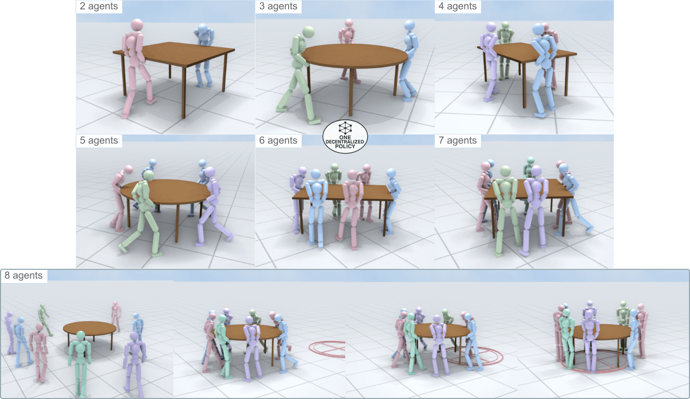
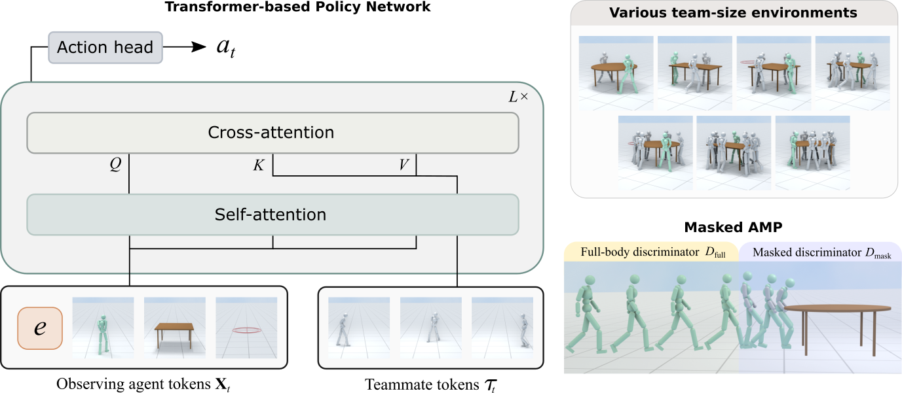
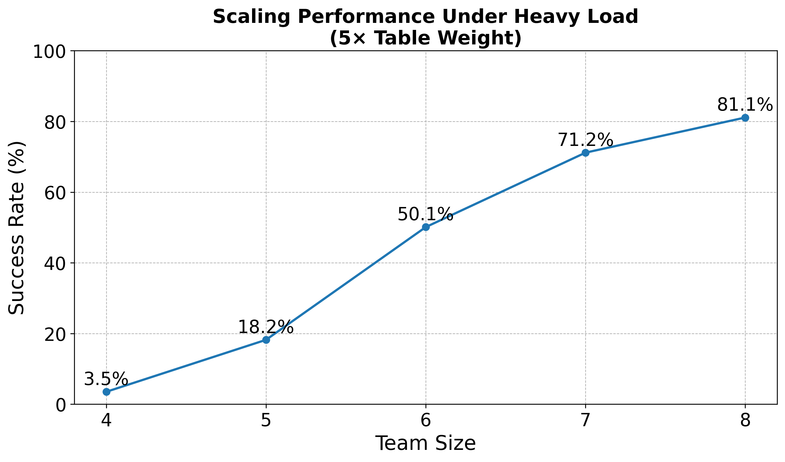

2 Agents
4 Agents
8 Agents
Physics-based humanoid control has achieved remarkable progress in enabling realistic and high-performing single-agent behaviors, yet extending these capabilities to cooperative human-object interaction (HOI) remains challenging. We present TeamHOI, a framework that enables a single decentralized policy to handle cooperative HOIs across any number of cooperating agents. Each agent operates using local observations while attending to other teammates through a Transformer-based policy network with teammate tokens, allowing scalable coordination across variable team sizes. To enforce motion realism while addressing the scarcity of cooperative HOI data, we further introduce a masked Adversarial Motion Prior (AMP) strategy that uses single-human reference motions while masking object-interacting body parts during training. The masked regions are then guided through task rewards to produce diverse and physically plausible cooperative behaviors. We evaluate TeamHOI on a challenging cooperative carrying task involving two to eight humanoid agents and varied object geometries. Finally, to promote stable carrying, we design a team-size- and shape-agnostic formation reward. TeamHOI achieves high success rates and demonstrates coherent cooperation across diverse configurations with a single policy.

A transformer-based policy network enables coordination between the observing agent (green humanoid) and its teammates (grey humanoids) through alternating self- and cross-attention layers. By training across diverse team-size environments, the framework learns a unified policy that works across different team configurations. To maintain motion realism and enhance skill diversity, a masked AMP strategy blends full-body and masked discriminators based on object interaction.
We evaluate TeamHOI across varying team sizes from 2 to 8 humanoid agents and object shapes. A single unified decentralized policy executes effective coordinations for all configurations with >97.5% success rates.

Additionally, we test coordination performance under increased task difficulty, where the table weight is scaled by 5×. The success rate rises consistently with team size, demonstrating that larger teams provide greater collective capability to handle heavy loads. This trend indicates that the learned policy effectively distributes effort across agents and scales to more demanding cooperative scenarios.
Our policy also generalizes to unseen object scales and larger team configurations. Below, we present zero-shot generalization results with 12 and 16 agents on large object geometries.
We compare TeamHOI against CooHOI, a cooperative HOI framework that solely relies on object dynamics as an implicit communication channel between agents and necessitates manual per-agent contact assignment. To adapt CooHOI to our task setting, we construct a modified variant, CooHOI*, and train separate models for each team-size configuration following the original CooHOI training pipeline. Specifically, we train three variants: CooHOI*-2, CooHOI*-4, and CooHOI*-8, where the suffix indicates the number of agents used during cooperative training. The results below present rollouts across different team configurations.
TeamHOI enables stable coordination across varying team configurations. Unlike CooHOI*, which requires privileged information on per-agent contact assignment, our method allows agents to autonomously coordinate walking trajectories and settle into stable lifting formations.